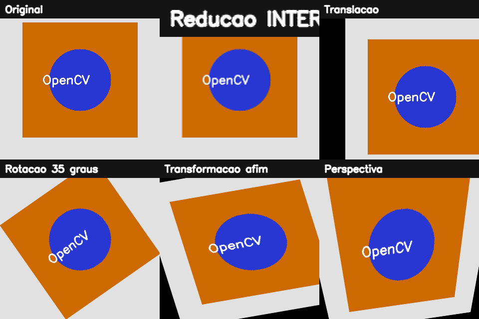

2. Transformações geométricas e interpolação¶
O que você aprenderá¶
Neste capítulo, você aprenderá a modificar onde os pixels aparecem sem confundir essa tarefa com a alteração de seus valores de intensidade. Ao final, deverá conseguir explicar e implementar redimensionamento, translação, rotação, transformações afins e transformações de perspectiva, além de escolher conscientemente o método de interpolação adequado.
Você também deverá ser capaz de:
- diferenciar transformação geométrica de interpolação;
- compreender mapeamento direto e mapeamento inverso;
- interpretar matrizes de transformação;
- escolher entre
INTER_NEAREST,INTER_LINEAR,INTER_CUBIC,INTER_AREAeINTER_LANCZOS4; - redimensionar imagens preservando proporção;
- transladar uma imagem por meio de uma matriz
2 × 3; - rotacionar em torno de diferentes centros;
- compreender por que rotações podem cortar a imagem;
- aplicar transformações afins a partir de três pares de pontos;
- aplicar homografias a partir de quatro pares de pontos;
- compreender o papel das bordas criadas pelas transformações;
- evitar interpolação inadequada em máscaras e rótulos.
Segundo Gonzalez e Woods (2010), transformações geométricas são fundamentais em processamento de imagens porque permitem corrigir, registrar, alinhar e alterar a geometria da cena. Em visão computacional, elas aparecem em tarefas como correção de documentos, estabilização, aumento de dados, registro de imagens e preparação de entradas para redes neurais (SZELISKI, 2022).
2.1 Duas perguntas diferentes: para onde vai o pixel e qual valor colocar?¶
Uma transformação geométrica responde:
Em que posição da imagem de saída cada informação deverá aparecer?
Já a interpolação responde:
Se a posição calculada cair entre pixels existentes, qual valor deve ser usado?
Analogia: mudar os móveis de uma sala¶
Imagine uma sala quadriculada. Os móveis estão apoiados sobre quadrados inteiros. Ao girar a planta da sala, um móvel pode passar a ocupar uma posição que não coincide exatamente com a nova grade. A transformação decide onde o móvel deveria estar; a interpolação decide como representar essa posição na grade disponível.
2.2 Sistema de coordenadas e tamanho da saída¶
No OpenCV, a imagem é acessada como:
mas funções geométricas normalmente recebem coordenadas como:
Além disso, parâmetros de tamanho como dsize seguem a ordem:
Exemplo 1 — erro clássico¶
altura, largura = imagem.shape[:2]
# correto
redimensionada = cv2.resize(imagem, (largura // 2, altura // 2))
Se você trocar largura e altura em uma imagem não quadrada, o resultado ficará deformado.
2.3 Redimensionamento¶
Redimensionar significa criar uma nova grade de pixels com mais ou menos posições.
Exemplo 2 — tamanho explícito¶
O tamanho final será:
Exemplo 3 — usando fatores de escala¶
2.4 Preservando a proporção¶
Se uma imagem mede 1200 × 800 e você força para 640 × 640, o conteúdo será deformado.
Analogia: fotografia impressa em borracha¶
É como imprimir uma fotografia em uma folha de borracha e puxá-la apenas em uma direção. Os objetos ficam mais largos ou mais altos do que realmente eram.
Para preservar a proporção:
altura, largura = imagem.shape[:2]
nova_largura = 640
escala = nova_largura / largura
nova_altura = int(altura * escala)
redimensionada = cv2.resize(
imagem,
(nova_largura, nova_altura),
interpolation=cv2.INTER_AREA
)
2.5 Interpolação: de onde vem o novo valor?¶
Quando redimensionamos ou rotacionamos uma imagem, a coordenada procurada pode ser fracionária, como:
Não existe um pixel exatamente nessa posição. Precisamos estimar um valor a partir dos vizinhos.
| Método | Ideia | Uso típico |
|---|---|---|
INTER_NEAREST |
usa o vizinho mais próximo | máscaras, rótulos e pixel art |
INTER_LINEAR |
combina vizinhos em grade 2 × 2 |
uso geral |
INTER_CUBIC |
usa vizinhança maior | ampliação com boa qualidade |
INTER_AREA |
considera contribuição de áreas | redução |
INTER_LANCZOS4 |
interpolação de alta ordem | ampliação com maior custo |
Analogia: estimar temperatura entre sensores¶
Se dois sensores próximos marcam 20 °C e 24 °C, uma posição intermediária pode ser estimada pela combinação das medições. A interpolação faz algo análogo com intensidades de pixels.
2.6 Por que INTER_NEAREST é importante para máscaras?¶
Considere uma máscara de classes:
Uma interpolação suave pode produzir valores intermediários que não correspondem a nenhuma classe válida.
Fotografia e rótulo não são o mesmo tipo de dado
Em fotografias, criar valores intermediários pode ser desejável. Em mapas de classe, fabricar valores novos pode corromper os rótulos.
2.7 Mapeamento direto e inverso¶
No mapeamento direto, cada pixel da origem é projetado para o destino. Arredondamentos podem gerar posições não preenchidas.
No mapeamento inverso, percorremos cada pixel da imagem de saída e perguntamos:
“De qual posição da imagem original este pixel deve receber informação?”
Essa estratégia ajuda a garantir que todas as posições da saída sejam preenchidas (SZELISKI, 2022).
2.8 Translação¶
Translação significa deslocar a imagem horizontal e/ou verticalmente.
A matriz é:
Exemplo 4 — deslocando 80 pixels para a direita e 40 para baixo¶
import numpy as np
import cv2
altura, largura = imagem.shape[:2]
M = np.float32([
[1, 0, 80],
[0, 1, 40]
])
transladada = cv2.warpAffine(
imagem,
M,
(largura, altura)
)
Valores negativos deslocam no sentido oposto.
2.9 O que acontece com a região que “fica vazia”?¶
Quando uma imagem é deslocada ou rotacionada, surgem regiões que não existiam na entrada.
Podemos definir como preenchê-las:
resultado = cv2.warpAffine(
imagem,
M,
(largura, altura),
borderMode=cv2.BORDER_CONSTANT,
borderValue=(255, 255, 255)
)
Outros modos incluem repetição e reflexão das bordas.
Analogia: deslizar uma fotografia sobre uma moldura¶
Ao deslocar uma foto para a direita dentro de uma moldura fixa, aparece uma faixa vazia à esquerda. O borderMode define o que será colocado nessa faixa.
2.10 Rotação¶
Uma rotação exige:
- centro de rotação;
- ângulo;
- escala.
Exemplo 5 — rotacionando em torno do centro¶
altura, largura = imagem.shape[:2]
centro = (largura / 2, altura / 2)
M = cv2.getRotationMatrix2D(
centro,
30,
1.0
)
rotacionada = cv2.warpAffine(
imagem,
M,
(largura, altura)
)
Analogia: papel preso por um alfinete¶
O centro de rotação é como o ponto onde um alfinete prende uma folha. Mudar a posição do alfinete muda toda a trajetória da rotação.
2.11 Por que uma rotação pode cortar os cantos?¶
O tamanho da tela de saída normalmente permanece o mesmo. Quando a imagem gira, os cantos podem ultrapassar os limites dessa tela.
Uma solução é calcular uma nova caixa envolvente.
Exemplo 6 — rotação sem corte¶
import math
altura, largura = imagem.shape[:2]
angulo = 45
M = cv2.getRotationMatrix2D(
(largura / 2, altura / 2),
angulo,
1.0
)
cos = abs(M[0, 0])
sin = abs(M[0, 1])
nova_largura = int(altura * sin + largura * cos)
nova_altura = int(altura * cos + largura * sin)
M[0, 2] += nova_largura / 2 - largura / 2
M[1, 2] += nova_altura / 2 - altura / 2
sem_corte = cv2.warpAffine(
imagem,
M,
(nova_largura, nova_altura)
)
2.12 Transformação afim¶
Uma transformação afim preserva:
- linhas retas;
- paralelismo;
- razões ao longo de uma mesma linha.
Ela pode combinar translação, rotação, escala e cisalhamento.
A matriz possui formato 2 × 3:
Três pares de pontos não colineares determinam a transformação.
Exemplo 7¶
origem = np.float32([
[50, 50],
[250, 50],
[50, 250]
])
destino = np.float32([
[30, 80],
[270, 40],
[80, 270]
])
M = cv2.getAffineTransform(origem, destino)
afim = cv2.warpAffine(
imagem,
M,
(largura, altura)
)
2.13 Transformação de perspectiva e homografia¶
Uma transformação projetiva consegue modelar a aparência de um plano visto sob perspectiva.
Ela usa uma matriz 3 × 3 e quatro pares de pontos.
Analogia: fotografia de uma folha sobre a mesa¶
Uma folha A4 é retangular, mas numa fotografia inclinada pode parecer um trapézio. A homografia permite mapear os quatro cantos fotografados para os quatro cantos de um retângulo frontal.
Exemplo 8 — corrigindo perspectiva¶
origem = np.float32([
[120, 80],
[500, 120],
[80, 600],
[540, 580]
])
destino = np.float32([
[0, 0],
[400, 0],
[0, 600],
[400, 600]
])
H = cv2.getPerspectiveTransform(origem, destino)
corrigida = cv2.warpPerspective(
imagem,
H,
(400, 600)
)
2.14 A ordem dos quatro pontos importa¶
Os pontos de origem e destino devem corresponder entre si.
Uma regra prática é usar sempre:
Trocar apenas dois pontos pode provocar:
- espelhamento;
- torção;
- deformação inesperada.
2.15 Transformação afim versus perspectiva¶
| Característica | Afim | Perspectiva |
|---|---|---|
| matriz | 2 × 3 |
3 × 3 |
| pares mínimos | 3 | 4 |
| preserva linhas retas | sim | sim |
| preserva paralelismo | sim | não necessariamente |
| corrige documento fotografado | limitada | adequada |
| modela efeito de profundidade de plano | não completamente | sim, para um plano |
2.16 Exemplo integrado do capítulo¶
O código completo do capítulo 2 executa uma sequência de operações e salva os resultados para comparação.
Pipeline:
imagem sintética
↓
redimensionamentos
↓
comparação de interpolações
↓
translação
↓
rotação
↓
rotação sem corte
↓
transformação afim
↓
homografia/perspectiva
↓
painel comparativo

2.17 Erros comuns e como diagnosticar¶
| Sintoma | Causa provável | Correção |
|---|---|---|
| imagem deformada | largura e altura invertidas | use (largura, altura) |
| máscara com valores estranhos | interpolação suave | use INTER_NEAREST |
| cantos desaparecem após rotação | canvas pequeno | calcule nova caixa envolvente |
| transformação afim absurda | pontos quase colineares ou ordem errada | revise os três pares |
| perspectiva torcida | correspondência dos quatro pontos errada | padronize a ordem |
| borda preta inesperada | área sem origem | configure borderMode/borderValue |
| objeto parece achatado | proporção não preservada | calcule escala uniforme |
2.18 Perguntas de revisão¶
- Qual é a diferença entre transformação geométrica e interpolação?
- Por que mapeamento inverso evita buracos?
- Por que máscaras devem usar
INTER_NEAREST? - O que representam
txetyem uma matriz de translação? - Por que o centro de rotação altera o resultado?
- Por que uma imagem rotacionada pode ser cortada?
- Quantos pares de pontos definem uma transformação afim?
- Quantos pares definem uma homografia?
- Qual propriedade a perspectiva pode quebrar que a afim preserva?
- O que acontece quando a ordem dos cantos está incorreta?
Exercícios de fixação¶
Parte A — redimensionamento e interpolação¶
Exercício 1¶
Reduza uma fotografia para 25% do tamanho usando INTER_AREA e INTER_LINEAR. Compare visualmente e explique qual é mais apropriado para redução.
Exercício 2¶
Crie uma máscara com valores 0, 1 e 2. Amplie-a com INTER_NEAREST e INTER_LINEAR. Use np.unique() para listar os valores resultantes.
Exercício 3¶
Escreva uma função:
que calcule automaticamente a altura.
Parte B — translação e rotação¶
Exercício 4¶
Translade uma imagem 100 pixels para a esquerda e 50 para baixo. Escreva a matriz usada.
Exercício 5¶
Rotacione a mesma imagem em 30°, 90° e 180°. Compare as áreas vazias.
Exercício 6¶
Implemente rotação de 45° sem cortar cantos.
Exercício 7¶
Rotacione a imagem em torno do canto superior esquerdo e depois em torno do centro. Explique geometricamente a diferença.
Parte C — afim e perspectiva¶
Exercício 8¶
Crie três pares de pontos e aplique uma transformação afim que simule cisalhamento.
Exercício 9¶
Fotografe ou gere sinteticamente um retângulo em perspectiva. Selecione quatro cantos e produza uma vista frontal.
Exercício 10¶
Troque propositalmente dois pontos da homografia. Descreva o defeito produzido.
Parte D — desafios¶
Exercício 11¶
Crie uma função que receba uma imagem e um ângulo qualquer e devolva a rotação sem corte.
Exercício 12¶
Implemente um pequeno “scanner de documento”: carregue uma imagem, receba quatro pontos manualmente e gere uma imagem retificada.
Exercício 13¶
Explique por que uma homografia funciona bem para uma folha de papel, mas não consegue alinhar perfeitamente todos os objetos de uma cena 3D com profundidades diferentes.
Síntese¶
Transformar uma imagem geometricamente não significa simplesmente “mover pixels”. O computador precisa relacionar sistemas de coordenadas, preencher uma nova grade e decidir como estimar valores em posições que não existiam originalmente. Redimensionamento, translação, rotação, transformação afim e perspectiva formam uma base que reaparece em registro de imagens, OCR, visão estéreo, redes neurais e detecção de objetos.
Referências¶
BRADSKI, Gary; KAEHLER, Adrian. Learning OpenCV: Computer Vision with the OpenCV Library. Sebastopol: O'Reilly Media, 2008.
GONZALEZ, Rafael C.; WOODS, Richard E. Processamento Digital de Imagens. 3. ed. São Paulo: Pearson, 2010.
SZELISKI, Richard. Computer Vision: Algorithms and Applications. 2. ed. Cham: Springer, 2022.